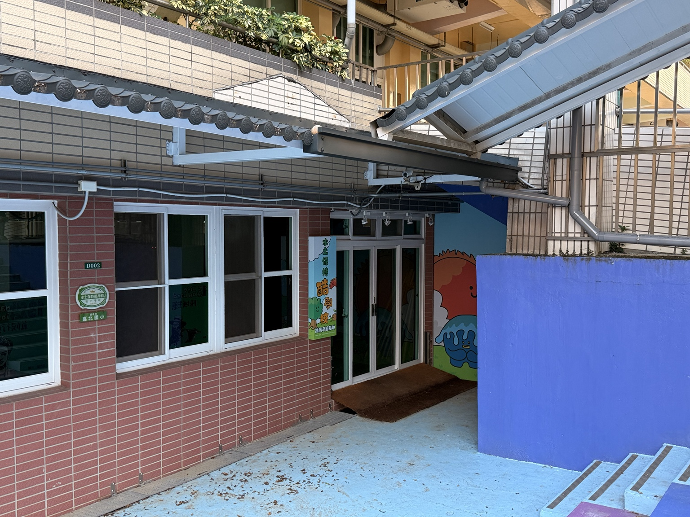
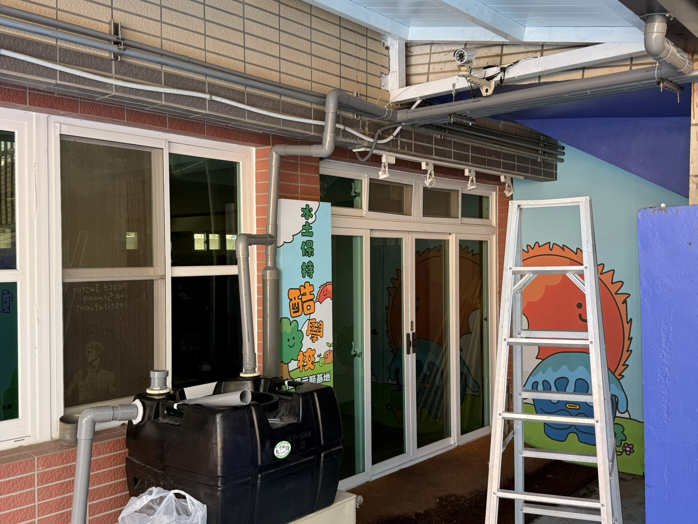
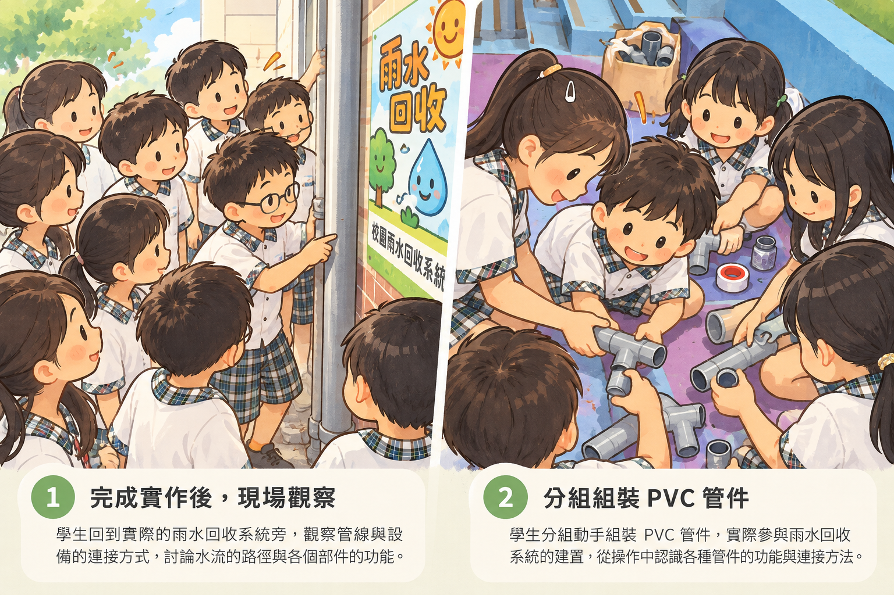
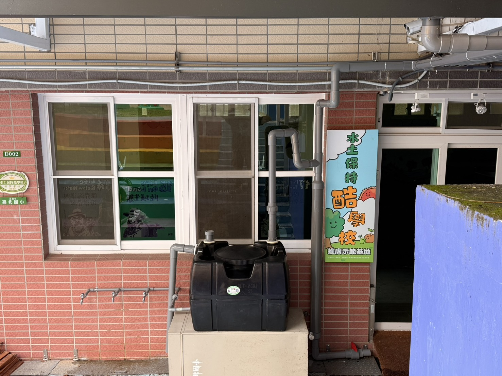

取用收集的雨水 → 澆灌校園植物
照顧植物
需要澆水時，可以取用桶內收集的雨水。用多少取多少，使用後關好水龍頭。

CHAPTER 0101 ／ 設計，從觀察開始
這段天溝早在雨水收集系統之前就存在。先看懂屋頂、樓梯和水的關係，再看後來增加了什麼。

CHAPTER 0202 ／ 工程師的觀察筆記
移到設備上看看名稱；點一下，讀它的設計理由。觸控螢幕可直接點選，也可以用鍵盤 Tab 選取。
進水管先向右繞，避開監視器，再沿著原有管線折返，接到沉澱管。這樣既不擋住監視器，也讓管線比較整齊。
CHAPTER 0303 ／ 同一套系統，換你操作
直接操作圖上的紅色排水閥與三個水龍頭。
停止下雨不會清空桶內已收的水；按「重新開始」才會重設。紅色排水閥控制沉澱管排水，水龍頭才是取用桶內雨水的開關。動畫簡化了停雨後管內剩餘水的流動，實際情況可能不同。
水收下來了，故事還沒結束。
剛才操作的是修改後的系統。
它是怎麼一步步變成現在這個樣子的？
CHAPTER 0404 ／ 設計也需要試一試
我們希望先把前段雨水排掉，再開始收水。接好管路後，還要真的放水測試，看看它有沒有做到。
從測試中找到原因
原本較低的進桶支管，讓沿著管壁流下的水有機會直接進入水桶。這會影響「先排掉前段雨水」的安排。
光看接好了還不夠，要看水實際怎麼走。

初期雨水可能在尚未完成沖洗前就進入水桶。

學生回到完成後的系統旁，觀察管線與設備如何連接。

進桶支管抬高後，關閉底部排水閥，水位才會逐漸升到高點，再進入水桶。
學生分組組裝 PVC 管件，實際參與系統建置。
CHAPTER 0505 ／ 留下的水，回到校園生活
三個龍頭取用的是同一桶儲存的雨水。把它用在適合的地方，就能少用一部分原本需要的自來水。
取用收集的雨水 → 澆灌校園植物
需要澆水時，可以取用桶內收集的雨水。用多少取多少，使用後關好水龍頭。
取用收集的雨水 → 用於適合的校園環境清潔
依老師安排，用在適合的環境清洗工作。這套系統目前沒有設置飲用水處理設備，因此收集的雨水主要用於澆灌與清潔。若要作為飲用水，還需要經過適當的淨水處理，並確認水質符合飲用水要求。
同一套設備，不同的天氣
收下一部分雨水
先讓前段雨水排走，需要收水時才關閉排水閥。留下的水，可以在之後有需要時取用。
能收多少，和降雨情況、原有水位及操作方式有關。
「氣候韌性」可以先理解成：面對天氣變化，多一些準備和調整的方法。有雨時留下部分雨水，需要時再取用，是校園能做的一小步。
雨水是補充水源。200 L 的容量有限，不能供應全校所有用水，也不能保證久不下雨時一直有水。仍需配合學校的用水安排，節約用水並照顧設備。
CHAPTER 0606 ／ 讓設備繼續好好工作
紅色排水閥負責沉澱管排水，三個水龍頭負責取用桶內的水。它們的工作不同，使用後要分別確認。
平常讓底部紅色排水閥開著。剛下雨時先排掉前 5–10 分鐘的雨水，讓屋頂先沖洗。網站中的等待已加速，現場不能照動畫秒數操作。
依老師的安排，確認初期沖洗後再關閉紅色排水閥，讓沉澱管蓄水、雨水進桶。不需要繼續收水時，再將排水閥打開。
依用途打開需要的水龍頭，用完逐一關好。沒有水時先關回龍頭，告訴老師；不要自行拆管或轉動其他接頭。目前收集的雨水未經飲用水處理，請用於澆灌與清潔。
看到漏水、天溝或排水口有落葉堵住、防蟲網破損，先告訴老師或管理人員。清理高處、拆接管線與搬動水桶，由成人安排處理。
維護內容包括觀察接頭是否漏水、檢查集排水處是否堵塞、防蟲網是否完整，以及安排儲水桶清潔。由令是方便拆開管線的接頭；拆桶清洗需先放空桶內的水，再由成人處理。